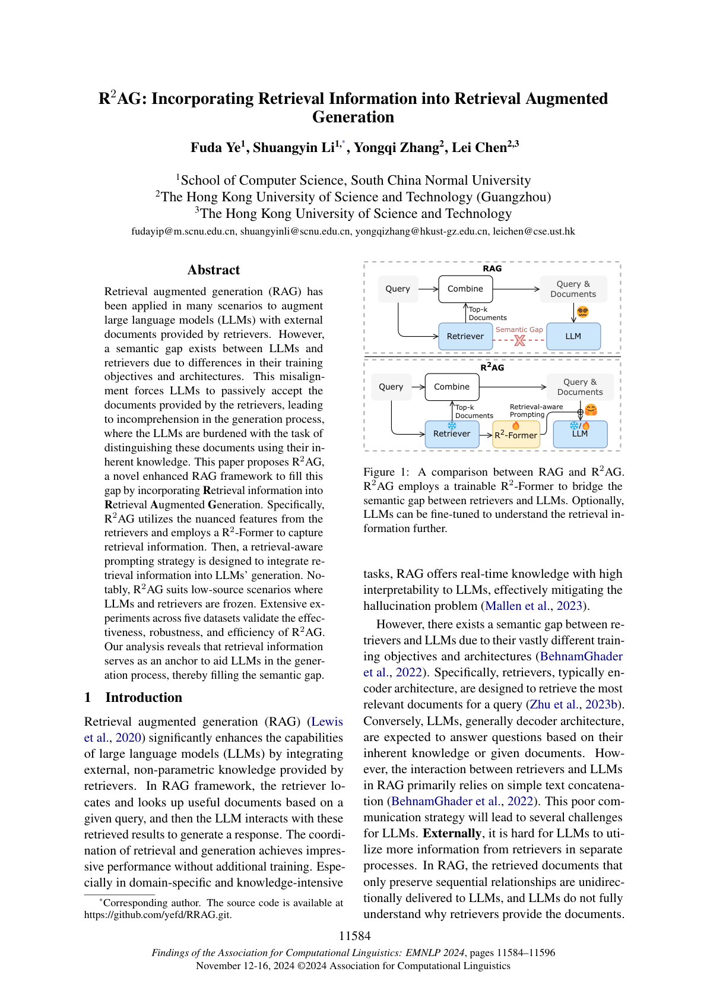
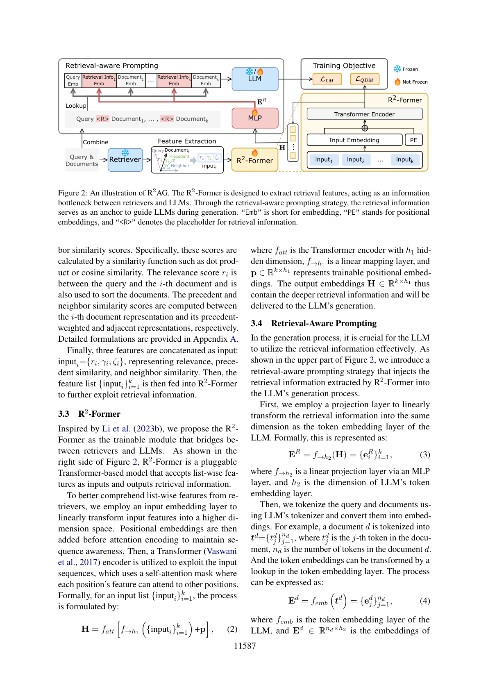
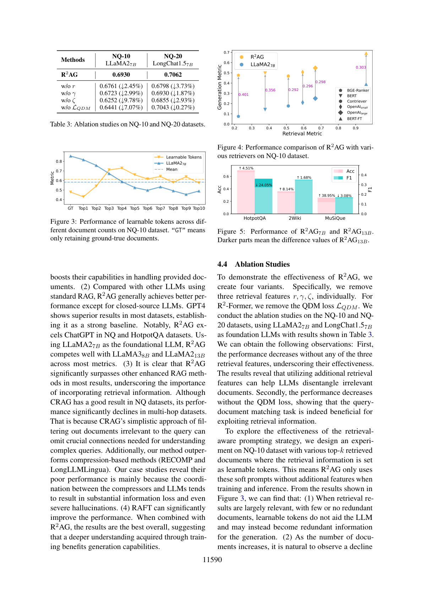
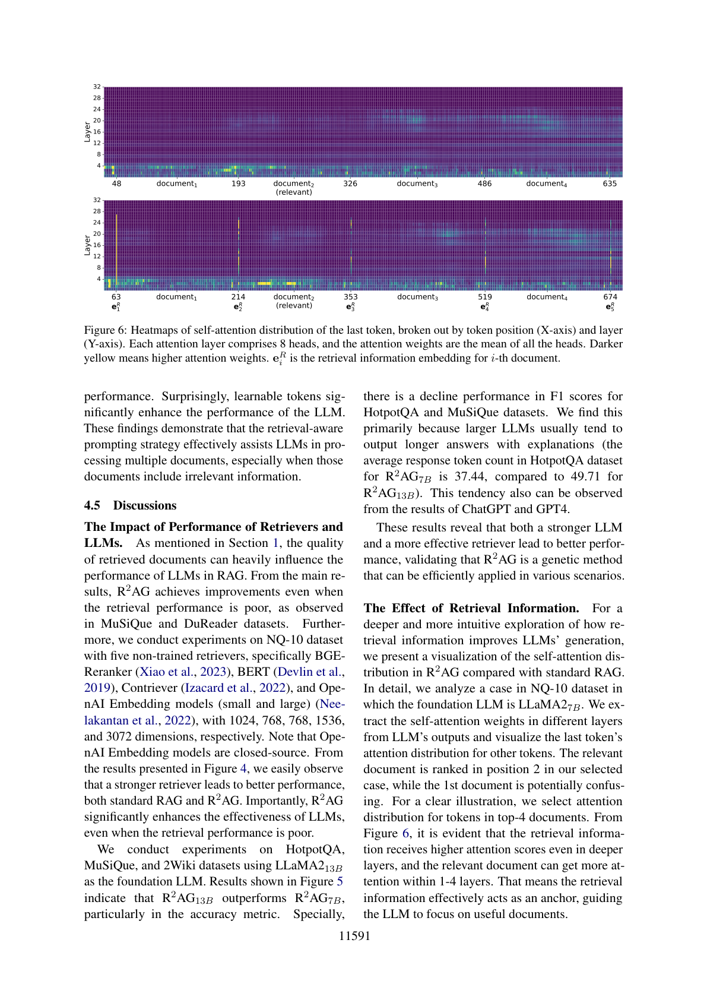

用轻量可训练的 R2-Former 弥合检索器与 LLM 之间的语义鸿沟，以检索信息作为「锚点」引导生成
检索增强生成（RAG）已被应用于诸多场景，用检索器提供的外部文档增强大语言模型（LLM）。然而，由于训练目标与架构的差异，LLM 与检索器之间存在语义鸿沟（semantic gap）。这种错位迫使 LLM 被动接受检索器提供的文档，在生成过程中导致理解困难——LLM 被迫用自己的固有知识去区分这些文档。本文提出 R2AG，一种新颖的增强型 RAG 框架，通过把检索信息（retrieval information）融入检索增强生成来填补这一鸿沟。具体而言，R2AG 利用检索器的细粒度特征，并用一个 R2-Former 来捕获检索信息；随后设计检索感知提示（retrieval-aware prompting）策略，将检索信息整合进 LLM 的生成过程。值得注意的是，R2AG 适用于检索器与 LLM 均冻结的低资源场景。在 5 个数据集上的大量实验验证了 R2AG 的有效性、鲁棒性与高效性；分析表明检索信息充当了「锚点」，辅助 LLM 在生成过程中理解文档，从而填补语义鸿沟。
RAG 通过整合检索器提供的外部非参数知识，显著提升 LLM 能力，无需额外训练即可在领域特定与知识密集型任务上取得优异表现，并有效缓解幻觉问题。然而，检索器（通常为编码器架构，旨在为查询检索最相关文档）与 LLM（通常为解码器架构，基于固有知识或给定文档回答）之间因训练目标与架构迥异而存在语义鸿沟。RAG 中二者的交互主要依赖简单的文本拼接，这种糟糕的沟通策略给 LLM 带来挑战：外部上，检索文档仅保留顺序关系、单向传给 LLM，LLM 并不真正理解检索器为何提供这些文档，低质量文档中的噪声也须被动接受；内部上，LLM 要用固有知识处理所有结果并判断哪些文档重要，且在过长文档上还会遭遇「lost-in-the-middle」问题。
现有增强型 RAG 方法（预处理类如 CRAG、BGM，压缩类如 RECOMP、LongLLMLingua）仍未认识到这一语义鸿沟，仍把检索与生成当作独立过程，直接把处理/压缩后的文档加入 LLM 输入，忽略了深层理解所需的语义连接。为此，本文提出低成本增强框架 R2AG：将检索器的语义表示转化为统一检索特征，用可训练的 R2-Former 捕获本质检索信息（图 1，R2-Former 是插在检索器与 LLM 之间的轻量可插拔模型），再通过检索感知提示让 LLM 获得含检索信息的额外嵌入。该策略不改动检索文档的内容与顺序、避免信息损失；R2AG 既可直接冻结 LLM 与检索器（仅训 R2-Former），也可二者联合微调，因此适合低资源场景。贡献总结为：(1) 提出将检索信息融入 RAG 的增强框架 R2AG，兼容检索器/LLM 冻结的低资源场景；(2) 设计轻量 R2-Former 弥合语义鸿沟，可无缝接入开源 LLM 的现有 RAG；(3) 提出检索感知提示策略，将检索信息注入输入嵌入，提升 LLM 对文档间关系的理解且不显著增加复杂度。实验表明 R2AG 在多种场景下性能与鲁棒性更优，推理延迟仅增加 0.8%，且检索信息「锚定」了 LLM 对文档的理解。

2.1 检索增强生成：尽管在海量语料上训练，LLM 在知识敏感任务上仍有幻觉与知识过时问题；RAG 通过结合检索组件，让 LLM 灵活访问海量最新数据，并已被扩展到音频、图像、知识图谱等多模态检索器。但 RAG 存在对检索结果敏感、复杂度增高、检索器-LLM 语义鸿沟等局限。
2.2 增强型 RAG：REPLUG、Atlas 利用 LLM 为检索器提供监督信号；预处理类方法（截断、选择、CRAG 的检索评估器、BGM 的桥接重排模型，以及 RECOMP、LongLLMLingua 等压缩方法）虽提升质量但引入额外推理开销且可能丢失关键信息。上述方法仍把检索与生成视为两个独立过程，未能充分弥合语义鸿沟；部分将文档融入隐表示的方法多面向 encoder-decoder LLM，限制了在 decoder-only 上的适用性；联合建模方法需额外训练对齐语义空间、损害 LLM 通用性。相比而言，R2AG 以低成本、非破坏性的方式弥合语义鸿沟。
形式上，给定查询 $q$ 与检索器 $f_R$ 按偏好排序的文档列表 $D=\{d_1,\dots,d_k\}$，生成器（LLM）$f_G$ 生成输出 $\hat y = f_G(P(q,D))$，其中 $P$ 为预定义提示模板。这暴露了基于提示的耦合方式会导致沟通错位与语义鸿沟。R2AG（图 2）先把检索器的表示处理为统一格式特征（兼顾查询-文档与文档-文档间的细粒度关系），再用 R2-Former 捕获检索信息，最后通过检索感知提示把检索信息插入 LLM 的输入嵌入空间，不损失信息也不显著增加复杂度，并可应用于 LLM 冻结的低资源场景。

先从检索器 $f_R$ 得到语义表示 $x_q=f_R(q)$、$x_d=f_R(d)$；单一表示无法捕获 LLM 生成所需的交互特征，且为适配不同检索器需把不同空间的表示转为统一格式。受检索下游任务启发，通过相关性（relevance）、前序相似度（precedent similarity）、邻居相似度（neighbor similarity）三类分数将表示对齐为检索特征：相关性分数 $r_i$ 在查询与第 $i$ 篇文档间计算（亦用于排序），前序/邻居相似度分别在第 $i$ 篇文档与其前序加权表示、相邻表示间计算。最终拼接为 $\text{input}_i=\{r_i,\gamma_i,\zeta_i\}$，形成特征列表 $\{\text{input}_i\}_{i=1}^k$ 输入 R2-Former。
R2-Former 是插在检索器与 LLM 之间的可训练 Transformer 模型，接受列表级特征、输出检索信息。先用电 mapping 层把输入特征线性变换到更高维，再加位置嵌入以保持序列感知，随后用 Transformer 编码器（自注意力掩码使每个位置可关注其他位置）处理：
其中 $f_{\text{att}}$ 为隐藏维 $h_1$ 的编码器，$f_{\rightarrow h_1}$ 为线性映射，$p\in\mathbb{R}^{k\times h_1}$ 为可训练位置嵌入；输出 $H\in\mathbb{R}^{k\times h_1}$ 含深层检索信息并送入 LLM 生成。
先用投影层把检索信息线性变换到与 LLM token 嵌入同维：$E_R=f_{\rightarrow h_2}(H)=\{e^R_i\}_{i=1}^k$；再用 LLM 分词器把查询与文档转为嵌入（$E_d=f_{\text{emb}}(t_d)$ 等）。为细致分析每篇文档，将对应的检索信息嵌入前置于该文档嵌入之前，作为外部知识「锚点」引导 LLM 关注有用文档。最终输入嵌入排列为：
由此对应文档的检索信息被充分混合，减轻 LLM 处理全部文档的负担；最终 $\hat y=f_G(E)$。
鉴于检索与生成的相互依赖，把 R2-Former 训练与 LLM 对齐整合为单阶段联合训练：R2-Former 侧做查询-文档匹配（QDM）二分类任务，预测 $\hat s=f_{\rightarrow 1}(H)$，用交叉熵损失 $L_{\text{QDM}}$；LLM 侧用语言建模（LM）损失最大化 token 对数似然；联合损失 $L=L_{\text{QDM}}+L_{\text{LM}}$。R2AG 可灵活选择「仅训 R2-Former（冻结 LLM）」或「联合训练」，在成本与精度间权衡。
在 5 个数据集上评估：Natural Questions（含 NQ-10/20/30）、HotpotQA、MuSiQue、2WikiMultiHopQA、DuReader。英文集用 Acc（NQ）或 Acc/F1（其余）；DuReader 用 F1 与 Rouge。
对比两类方法：使用不同 LLM 的标准 RAG（开源 LLaMA2/3、LongChat、Qwen1.5、InternLM2，闭源 ChatGPT/GPT4），以及使用相同基座 LLM 的增强型 RAG（CoT、RECOMP、CRAG、Self-RAG、LongLLMLingua、RAFT）。按是否需训练 LLM 分为 frozen 与 fine-tuned 两组。

结论：(1) 相比标准 RAG 基座，R2AG 显著提升，在多跳数据集上也增强复杂推理能力，16k token 的 DuReader 上仍有效，体现鲁棒高效；(2) 除闭源 GPT4 外普遍优于其他标准 RAG LLM，在 NQ/HotpotQA 上超越 ChatGPT，以 LLaMA27B 基座可媲美 LLaMA38B/213B；(3) 显著超越其他增强型 RAG（CRAG 在多跳集上因过滤掉关键连接而大幅下滑，压缩类 RECOMP/LongLLMLingua 因信息损失与幻觉而表现差），印证融入检索信息的重要性；(4) RAFT 能显著提升，与 R2AG 结合后整体最佳。
构造四个变体（分别移除检索特征 $r,\gamma,\zeta$ 与 QDM 损失 $L_{\text{QDM}}$），在 NQ-10/20 上结果见表 3：移除任一检索特征性能均下降（说明其有效性，尤其 $\zeta$ 邻居相似度对解耦无关文档最关键）；移除 QDM 损失也下降，说明查询-文档匹配任务确有助利用检索信息。
为探究检索感知提示策略，在 NQ-10 上把检索信息设为可学习 token（仅用软提示、无额外特征）。图 3 显示：当检索结果大多相关、冗余少时，可学习 token 无益甚至冗余；但随着文档数增多，可学习 token 显著增强 LLM——说明该策略在含无关信息的多文档场景下尤其有效。
检索器与 LLM 性能的影响：即便检索质量差（MuSiQue、DuReader），R2AG 仍带来提升。在 NQ-10 用 5 个未训练检索器（BGE-Reranker、BERT、Contriever、OpenAI small/large）实验（图 4）表明：更强的检索器带来更优性能，且 R2AG 在检索性能差时仍能显著增强 LLM。以 LLaMA213B 为基座（图 5）显示 R2AG13B 优于 R2AG7B（准确率指标上尤其明显），但 HotpotQA/MuSiQue 的 F1 略降——因更大 LLM 倾向输出更长带解释的回答。
检索信息的作用：通过可视化 R2AG 与标准 RAG 的自注意力分布（图 6，NQ-10 案例：相关文档排第 2、第 1 篇易混淆），可见检索信息嵌入 $e^R_i$ 即便在更深层也获得更高注意力，相关文档在 1–4 层即获更多关注——检索信息确实充当「锚点」引导 LLM 聚焦有用文档。

本文提出新颖的增强型 RAG 框架 R2AG，将检索器的检索信息融入 LLM 生成过程，弥合检索器与 LLM 间的语义鸿沟，从而全面理解检索文档。实验表明 R2AG 优于其他对比方法，详细分析进一步证实其鲁棒性与有效性。未来工作可引入更多检索特征。局限性包括：依赖编码器式检索器的语义表示（稀疏/交叉编码器检索器的适用性待探索）；依赖基座 LLM 能力，更强的闭源 LLM 可能不兼容；除相关性/前序/邻居三类特征外或存在其他信息特征；目前在 5 个提供相关文档的数据集上评估，无相关文档的场景（可结合 Self-RAG 等技术）仍需考虑。伦理声明：所用数据集与模型均公开，且严格遵循学术与开源社区伦理规范。